Game Design Document
A first-person maze runner where you cannot stop, and the maze changes behind your back.
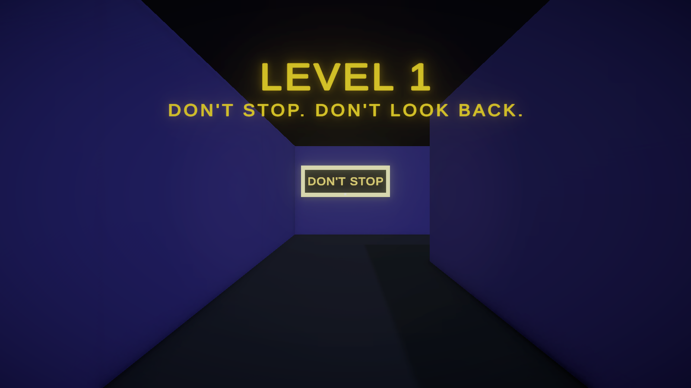
Genre: first-person maze / action-puzzle Engine: Unity 6 (URP) Platform: PC, keyboard + mouse (macOS build) Session: 3–8 minutes Audience: 12+, casual-to-core playersTeam: Adel Nabih, Maryam Sherif, Ali Eissa
Course: Game Design
Instructor: Dr. Arafa Taher
Date: October 2026
Repository: github.com/adel-nabih/SprintOrShift
Elevator pitch. You are in a dark neon maze. If you stand still for two seconds, you are dragged back to the start. Every time you turn your back on a purple wall, the maze rearranges itself. You can't stop and you can't go back. You can only keep moving until you reach the glowing portal.
| Pillar | What it means for design decisions |
|---|---|
| Momentum over caution | Every rule rewards moving and punishes hesitating. There is no pause, no map and no slow "careful" option. |
| The maze is watching | The world reacts to where you look. Walls change only behind your back, so looking (or not looking) is part of how you play. |
| Readable rules, chaotic results | Each rule is simple and stated on a wall sign. The chaos comes from how the rules combine, not from randomness. |
| Small and focused | Two levels that test the idea well, instead of a large game that isn't finished. |
| Input | Action | Input | Action |
|---|---|---|---|
| W A S D / arrows | Move (smooth acceleration, 6.5 m/s) | Mouse | Look (pitch clamped to ±85°) |
| Esc | Release the mouse cursor | Left click | Capture the mouse again |
| R | Restart (Victory screen only) |
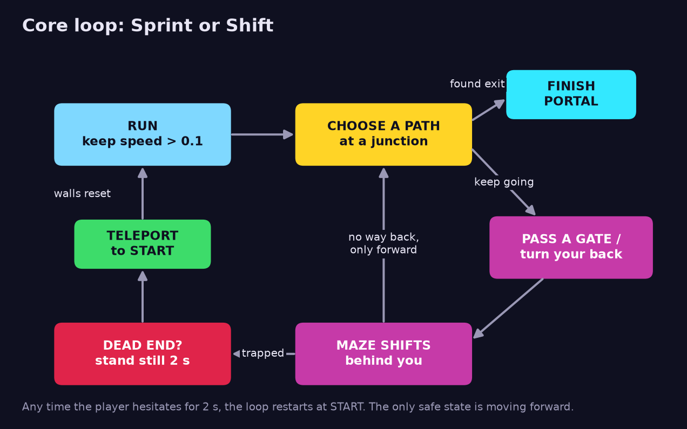
Second to second, the player runs and chooses at junctions under the 2-second pressure. Minute to minute, they learn the maze across resets: each teleport costs time but teaches them the layout and where the traps are. Across the game, Level 1 introduces each rule on its own, and Level 2 combines them all with faster walls.
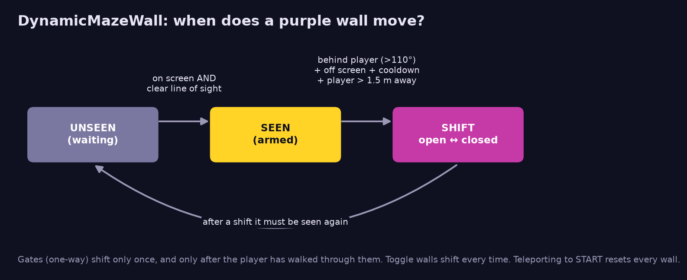
| Wall type | Starts | Shifts when… | Purpose |
|---|---|---|---|
| One-way gate (cyan arrow on the maps) | Open | Seen, the player has walked ≥ 3 m past it in the arrow direction, and it is now behind them. Shifts once only. | Stops the player retracing their steps and turns wrong choices into dead ends. |
| Toggle wall (⇄ on the maps) | Open | Seen, then behind the player. Flips every time. Cooldown is 2.0 s in L1 and 0.6 s in L2. | Changes the paths: creates shortcuts or seals off a region. |
Safety rules: a wall never shifts while the player is within 1.5 m of it, so it can't trap them inside the wall. Every wall resets when the player is teleported.
| Parameter | Value | Why |
|---|---|---|
| Stillness limit | 2.0 s | Long enough to turn a corner and read a sign. Too short to stop and study the maze. |
| Speed threshold | 0.1 m/s | Uses the speed the player actually moves at, so pushing into a wall counts as standing still. This is what makes Rule 3 work. |
| Warning overlay | Fades in from 15%–60% of the limit | Ignores tiny pauses, then makes the danger obvious. |
Both levels use 4 m grid cells. They are written as text layouts in SprintOrShiftLevelBuilder.cs, so designers can edit a maze by typing characters. Both layouts were checked with a breadth-first-search solver: the exit can be reached even when every toggle wall is closed.
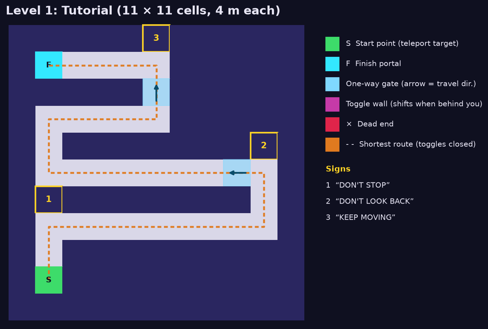
Teaching beats: (1) the first thing the player sees is "DON'T STOP". (2) "DON'T LOOK BACK" is placed just before the first gate, which closes behind them a few seconds later. (3) "KEEP MOVING" is placed before the second gate and the portal.
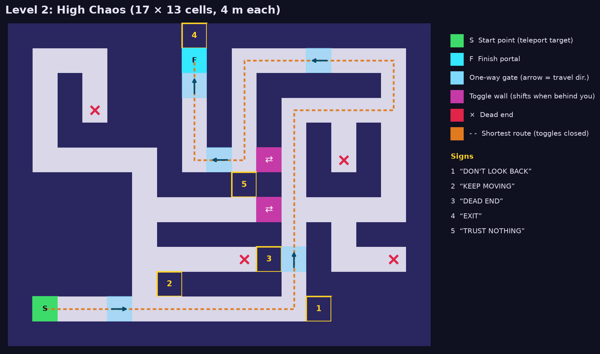
^ next to it). This teaches players not to trust where a corridor seems to lead.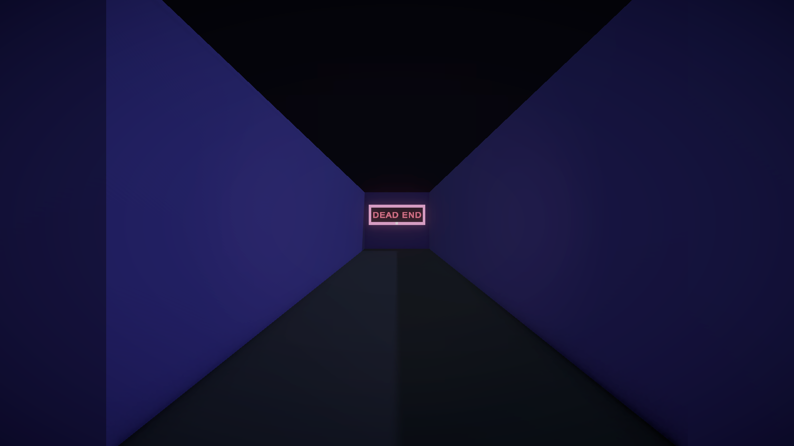
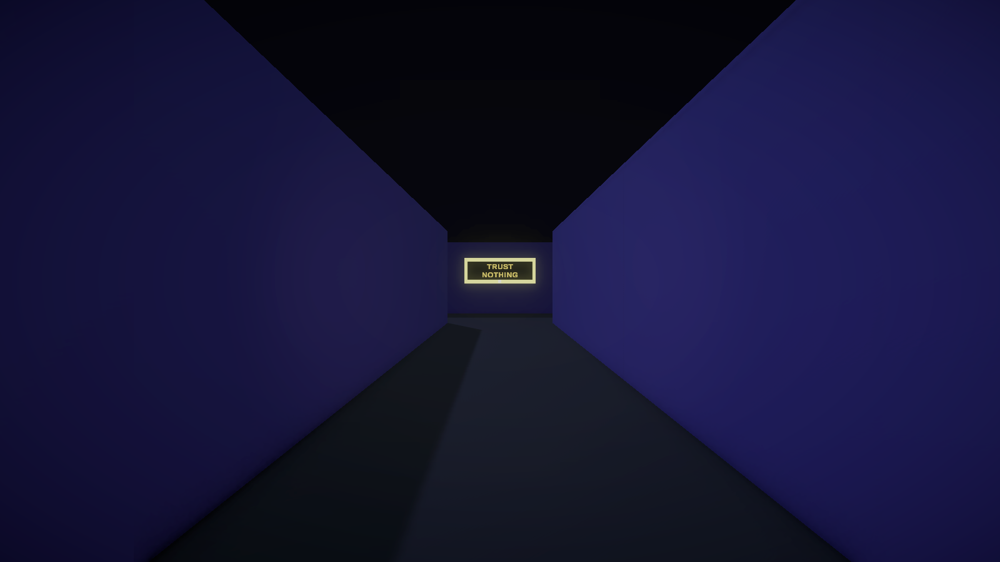
Dark neon toon. The world is built only from Unity primitive cubes, with flat colours and strong contrast: indigo walls, a near-black floor and dark fog. Anything important glows (bloom): the green START pad, the yellow, red and cyan signs, and the cyan portal. Purple marks the dynamic walls, so attentive players can spot them. A camera flashlight limits how far you can see, which adds to the tension.
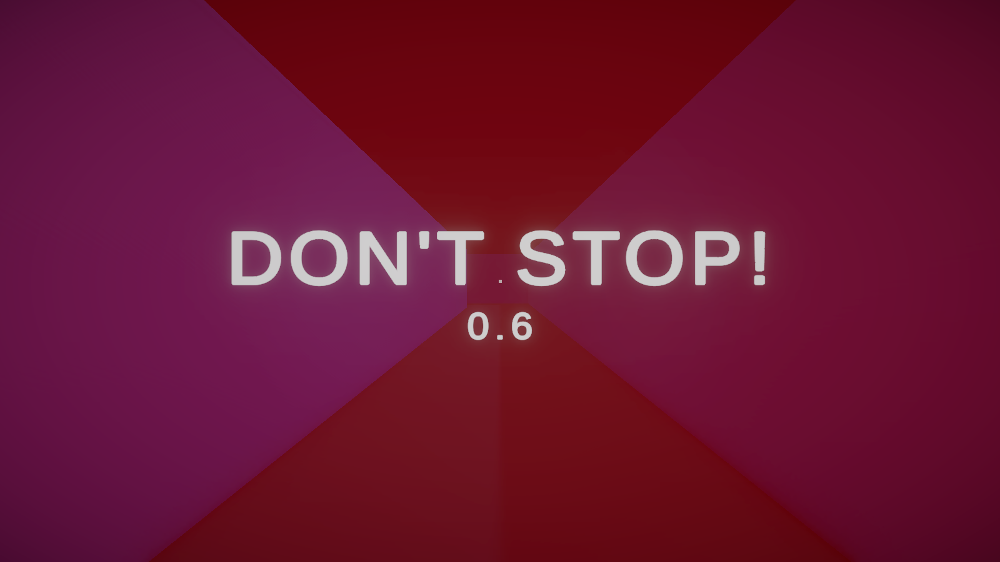
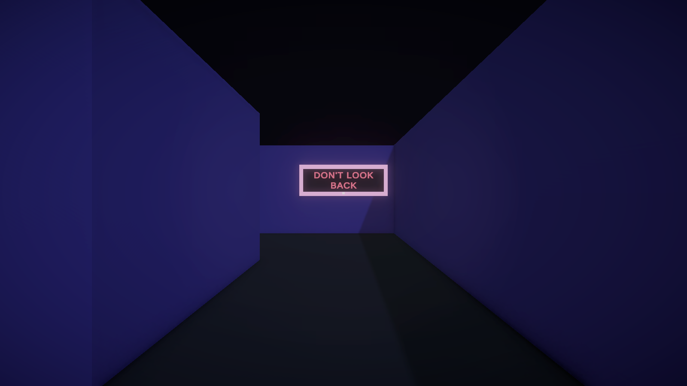
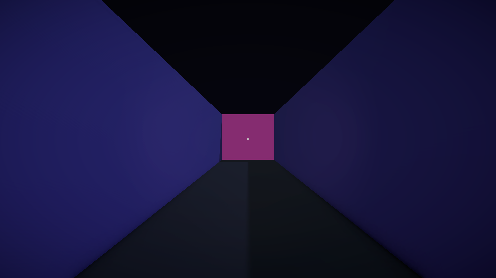
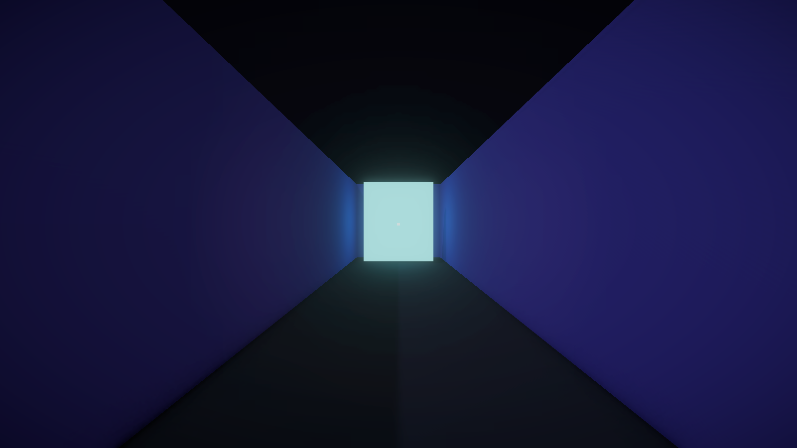
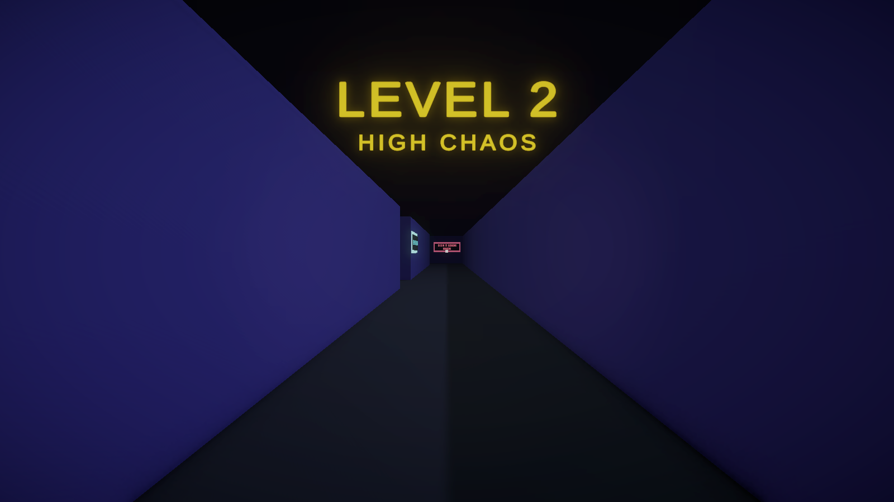
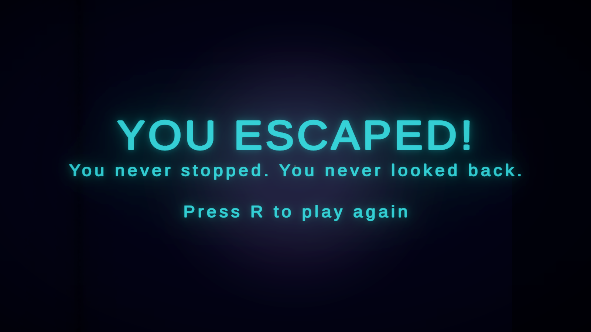
| Event | Feedback the player gets |
|---|---|
| Standing still | Red full-screen overlay fades in, with "DON'T STOP!" and the seconds left |
| Teleported | "TOO SLOW! BACK TO START" message, then back at the green START pad |
| Wall shifted | None at the moment it happens (it's always behind you). You discover it when you turn round. Planned: a "slam" sound. |
| Level start / complete | Large centre-screen title, then a fade |
Target aesthetics: Sensation and Challenge, with Fantasy (being hunted by a living maze) as flavour. The table follows three connected chains, each running from a mechanic to a dynamic to an aesthetic.
| # | Mechanic | Dynamic | Aesthetic |
|---|---|---|---|
| 1 | Stillness timer: speed < 0.1 for 2 s means teleport to START. Countdown overlay. | Players never pause. They make split-second choices at junctions and "wiggle" to buy time, which still costs them. | Urgency, adrenaline (Sensation, Challenge) |
| 2 | Line-of-sight wall shifting: a wall is armed when seen and shifts once it's more than 110° behind you. | Players avoid turning round, glance back nervously, and stare at walls to "freeze" them. | Paranoia, dread (Sensation, Fantasy) |
| 3 | Dead ends + one-way gates + stillness reset (the reset also restores every wall). | Being trapped becomes a choice: players stand still on purpose to escape. | Tension, then relief (Challenge, Discovery) |
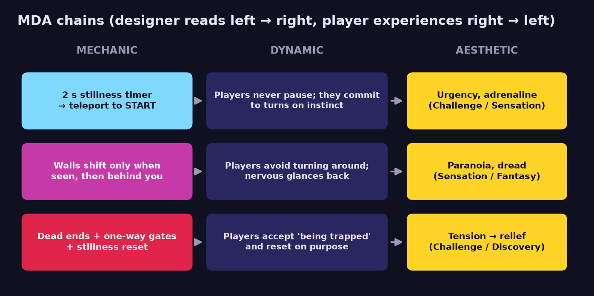
Chain 1 feeds chain 2: you can't stop to watch your back, so the time pressure is what makes "don't look back" dangerous. Chain 2 feeds chain 3: walls closing behind you create real dead ends. Chain 3 loops back to chain 1: the way out of a trap is the stillness rule itself. One mechanic both punishes and rescues, and players learn to use it both ways.
| Principle | Where it appears |
|---|---|
| Teach through level design | Level 1 is linear, and each sign sits right before the mechanic it describes. Level 2 only combines rules the player already knows. |
| Clear feedback | The stillness overlay has a visible countdown. Teleports always show a message. Every important object glows. |
| Signifiers / affordances | Dynamic walls are a different colour (purple) from static walls (indigo). The portal glows, which says "go here". |
| Difficulty curve | Level 1 has 2 gates and no branches. Level 2 has 5 gates, 2 toggle walls with a 3× faster cooldown, 4 dead ends and a trick corridor. |
| Meaningful choice / risk–reward | The toggle shortcut in Level 2 saves time but can close behind you. |
| Fairness & predictability | Walls follow one rule (seen, then behind you) and reset on teleport. The exit is always reachable, which was proven by a solver. |
Unity 6 (6000.4.0f1), Universal Render Pipeline, the new Input System and TextMeshPro. There are three runtime scripts with one-way dependencies: the player and the walls talk to GameManager.Instance.
| Script | Responsibility |
|---|---|
FirstPersonController | CharacterController movement with smoothed acceleration, smoothed mouse look with pitch clamp, the 2 s stillness timer, TeleportToStart(), and the Finish trigger (built-in Finish tag). |
DynamicMazeWall | Each frame: frustum test + Physics.Linecast line-of-sight check, a "behind" angle test, cooldown and distance guards, then turns the Renderer and Collider on or off together. ResetWall() restores the starting state. |
GameManager | Start Point reference, stillness overlay, centre messages, victory panel, wall reset on teleport, and level transitions (nextSceneName, empty = victory). |
SprintOrShiftLevelBuilder (editor only) | Builds both scenes from text layouts: walls, gates, toggles, signs, START, portal, player, UI and lighting. |
Why not OnBecameInvisible()? In the Editor it also counts the Scene-view camera, it stops firing once a wall hides its own Renderer, and it ignores what is in the way. Testing the player camera directly is the same idea, but predictable.
Hierarchy (identical in both levels): Directional Light, Global Volume, GameManager, Environment (Floor, StartPoint), Maze (Walls / DynamicWalls / Signs), Player → PlayerCamera → Flashlight, UI (Crosshair, StillnessOverlay, MessageText, VictoryPanel), FinishPortal.
| Observation | Change |
|---|---|
| "The pink boxes for the dead ends are always there." | Debug gizmos were drawn in the Game view. They now draw only when a wall is selected. Fixed |
| "Moving the mouse is really slow." | Sensitivity raised from 0.12 to 0.45 and smoothing from 20 to 30. Fixed |
| "The purple walls seem random. Sometimes they're up before I've looked back." | Added line of sight and a "behind you" angle, and all walls now start open. Fixed. This was the most important change: it moved chain 2 from confusion to paranoia. |
Scripted play-mode tests passed for: stillness teleport, gate closes behind the player, walls reset on teleport, walls hidden behind other walls don't count as seen, turning 90° to the side does not trigger a shift, turning fully round does, and the portal loads Level 2. A solver confirmed both mazes can be completed.
| Feature | Status |
|---|---|
| First-person WASD movement + smooth mouse look | Implemented |
| Rule 1: 2 s stillness teleport + warning overlay | Implemented |
| Rule 2: line-of-sight wall shifting (gates + toggle walls) | Implemented |
| Rule 3: dead ends + wall reset on teleport | Implemented |
| Level 1 (tutorial) and Level 2 (high chaos), portal, transitions, victory screen | Implemented |
| Glowing signs, bloom, fog, flashlight | Implemented |
| Playable macOS build | Implemented |
| Audio: heartbeat during countdown, wall "slam", music | Planned |
| Pause menu with mouse-sensitivity slider; main menu | Planned |
| Telegraphing when a wall becomes "armed" (flicker / particles) | Planned |
| Run timer + best time per level | Planned |
| Level 3 (1.5 s stillness limit, mixed wall types) | Planned |
| Gamepad support, Windows build | Planned |